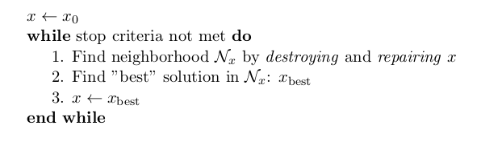
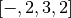
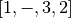
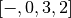
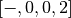
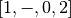
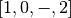
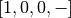
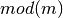
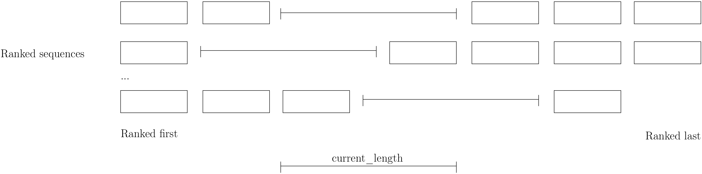

7.7. Large neighborhood search (LNS): the Job-Shop Problem
We have seen in the previous chapter that one of the difficulties of Local Search is to define the right notion of neighborhood:
- too small and you might get stuck in a local optimum;
- too big and you might loose precious time exploring huge neighbourhoods without any guarantee to find a good solution.
Could we combine advantages of both approaches? Visit huge neighborhoods but only paying the cost needed to visit small neighborhoods? This is what Very Large-Scale Neighbourhood (VLSN)[1] methods try to achieve. The basic idea is to create large neighborhoods but to only (heuristically) visit the more interesting parts of it.
Large Neighbourhood Search (LNS) is one of those VLN methods and is especially well suited to be combined with Constraint Programming.
7.7.1. What is Large Neighborhood Search?
The Large Neighborhood Search (LNS) meta-heuristic was proposed by Shaw in 1998 [Shaw1998]. The neighborhood of a solution is defined implicitly by a destroy and a repair methods. A destroy method destroys part of the current solution while a repair method rebuilds the destroyed solution. Typically, the destroy method contains some randomness such that different parts of the current solution are destroyed and... different parts of the search tree visited! This means that the neighborhoods can be seen as larger than in “classical” Local Search, hence the name.
In its very basic form, we could formulate large neighborhood search like this:
Often, steps 1. and 2. are done simultaneously. This is the case in or-tools.
It looks very much like Local Search, the only difference is the way the neighborhoods are constructed.
As always, the definition of the destroy and repair methods is a matter of trade-off.
An important concept is the degree of destruction: if only a small part of a solution is destructed, the LNS misses its purpose and merely becomes a “classical” Local Search method acting on small neighborhoods. If a very large part (or the entirety) of the solution is destructed, then the reconstruction process consists in repeated (full) optimizations from scratch.
Various scenarios are possible for the repair method ranging from reconstructing optimally the destructed (partial) solution or using weak but very quick heuristics to reconstruct it. In the first case, you obtain the best possible completed solution but it is often costly, in the second case you obtain a probably bad solution but very quickly. Most probably, you’ll want to use an intermediate scenario: devise an heuristic that reconstruct quite quickly not too bad solutions.
When Large Neighborhood Search is used in combination with Constraint Programming, we often use the term fix for the destroy method and optimize for the repair method. Indeed, the destruction is done by freeing some variables and thus fixing the remaining ones to their current values and the repairing consists in optimizing this solution while keeping the fixed variables to their current values.
7.7.2. Large Neighborhood Search in or-tools
Large Neighborhood Search is implemented with LocalSearchOperators in or-tools. For IntVars, there is a specialized BaseLNS class that inherits from IntVarLocalSearchOperator. For IntervalVars and SequenceVars, you can inherit from the corresponding LocalSearchOperators. We’ll use the BaseLNS class in this sub-section and inherit from SequenceVarLocalSearchOperator when we’ll try to solve the Job-Shop Problem below.
Our basic example from previous chapter is to minimize the sum of  IntVars
IntVars
 each with domain
each with domain ![[0, n - 1]](../../_images/math/a84dc802efb57b155d24b907ce9e7bae8caa359a.png) .
We add the fictive constraint
.
We add the fictive constraint  (and thus ask for
(and thus ask for  ):
):

For IntVars, you can use the BaseLNS class. In this LocalSearchOperator, we have redefined the OnStart() and MakeOneNeighbor() methods like this:
| LocalSearchOperator | BaseLNS |
|---|---|
| OnStart() | InitFragments() |
| MakeOneNeighbor() | NextFragment() |
A Fragment is just an std::vector<int> containing the indices of the IntVars to “destroy”, i.e. to free. The other IntVars keep their current values. The complementary DecisionBuilder given to the LocalSearchOperator will repair the current solution. The signature of the NextFragment() is as follow:
virtual bool NextFragment(std::vector<int>* fragment) = 0;
This method is a pure virtual method and must be defined. To free some variables, you fill the fragment vector with the corresponding indices. This method returns true if their are still candidates solutions in the neighborhood, false otherwise (exactly like the MakeOneNeighbor() method).
Let’s use a basic LNS to solve our basic problem. We’ll free one variable at a time in the order given by the std::vector of IntVars. First, we initialize the index of the first variable in InitFragments():
virtual void InitFragments() { index_ = 0; }
where index_ is a private int indicating the current index of the variable we are about to destroy.
The NextFragment() method is straightforward:
virtual bool NextFragment(std::vector<int>* fragment) {
const int size = Size();
if (index_ < size) {
fragment->push_back(index_);
++index_;
return true;
} else {
return false;
}
}
This time, let’s repair optimally the destroyed solution. The NestedOptimize DecisionBuilder is exactly what we need as a complementary DecisionBuilder. It will collapse a search tree described by a DecisionBuilder db and a set of monitors and wrap it into a single point.
There exist several factory methods to construct such a NestedOptimize DecisionBuilder but all need an Assignment to store the optimal solution found:
Assignment * const optimal_candidate_solution = s.MakeAssignment();
optimal_candidate_solution->Add(vars);
optimal_candidate_solution->AddObjective(sum_var);
The factory method we will use look like this:
DecisionBuilder* MakeNestedOptimize(DecisionBuilder* const db,
Assignment* const solution,
bool maximize,
int64 step);
where db is the DecisionBuilder used to optimize, solution stores the optimal solution found (if any), maximize is a bool indicating if we maximize or minimize and step is the classical step used to optimize.
For our basic example, we use a basic DecisionBuilder to optimize:
DecisionBuilder * optimal_complementary_db = s.MakeNestedOptimize(
s.MakePhase(vars,
Solver::CHOOSE_FIRST_UNBOUND,
Solver::ASSIGN_MAX_VALUE),
optimal_candidate_solution,
false,
1);
We then construct our LNS operator:
OneVarLns one_var_lns(vars);
and wrap the Local Search:
LocalSearchPhaseParameters* ls_params
= s.MakeLocalSearchPhaseParameters(&one_var_lns,
optimal_complementary_db,
limit);
DecisionBuilder* ls = s.MakeLocalSearchPhase(initial_solution,
ls_params);
where limit is a SearchLimit and initial_solution is our initial solution. When n=4, this
initial solution is ![[3, 2, 3, 2]](../../_images/math/9daf9afdc97f1d521ca2f4ca32e905f8e9edfc53.png) .
.
The simplified output of dummy_lns is:
Simple Large Neighborhood Search with initial solution
Start search, memory used = 15.21 MB
Root node processed (time = 0 ms, constraints = 2, memory used =
15.21 MB)
Solution #0 (objective value = 10, ...)
Solution #1 (objective value = 8, ...)
Solution #2 (objective value = 6, ...)
Solution #3 (objective value = 3, ...)
Solution #4 (objective value = 1, ...)
Finished search tree, ..., neighbors = 10, filtered neighbors = 10,
accepted neigbors = 4, ...)
End search (time = 1 ms, branches = 58, failures = 57, memory used =
15.21 MB, speed = 58000 branches/s)
Objective value = 1
5 solutions were generated with decreased objective
values. Solution #0 is the initial solution given:
. For the next 4 solutions, the NestedOptimize DecisionBuilder did its job and optimized
the partial solution:
- neighborhood 1 around
![[3,2,3,2]](../../_images/math/175328140da77805addf7d969f61c9e0df20f3dc.png) :
: -  is immediately taken as the complementary DecisionBuilder transforms it into the optimal (for this DecisionBuilder) solution
![[1,2,3,2]](../../_images/math/a2e155dc4c6d34c0c8b209dfa1b702bd96840256.png) with an objective value of 8.
with an objective value of 8. - neighborhood 2 around :
- is rejected as the optimal solution doesn’t have a better objective value than 8.
 is immediately accepted as the optimal solution constructed is
![[1,0,3,2]](../../_images/math/9aa199506aa73098f3645c97321d46ff830e0520.png) with an objective value of 6.
with an objective value of 6. - neighborhood 3 around :
-  and are rejected and
![[1,0,-,2]](../../_images/math/4270dc00d93b45bbdac94c3f2c6ffa76a63f4353.png) is accepted as the optimal solution
constructed is
is accepted as the optimal solution
constructed is ![[1,0,0,2]](../../_images/math/16a64b20b673f9d47a80a721f659a4e7726bb6e1.png) with an objective value of 3.
with an objective value of 3. - neighborhood 4 around :
- ,  and  are rejected while  is accepted
as the optimal solution constructed
![[1,0,0,0]](../../_images/math/e8e1d5ff72c593aab7d4938dbbc39be2e7f2e958.png) has an objective value of 1.
has an objective value of 1.
The two last lines printed by the SearchLog summarize the local search:
Finished search tree, ..., neighbors = 10, filtered neighbors = 10,
accepted neigbors = 4, ...)
End search (time = 1 ms, branches = 58, failures = 57, memory used =
15.21 MB, speed = 58000 branches/s)
Objective value = 1
There were indeed 10 constructed candidate solutions among which 10 (filtered neighbors) were accepted after filtering (there is none!) and 4 (accepted neighbors) were improving solutions.
For this basic example, repairing optimally led to the optimal solution but this is not necessarily the case.
7.7.3. Interesting LNS operators
At the moment of writing (28 th of February 2015, rev 3845), there are only a few specialized LNS operators. All concern IntVars:
- There are two basic LNS operators:
- SimpleLNS: Frees a number of contiguous variables (à la ) in the std::vector<IntVar*>;
- RandomLNS: Frees a number
 of randomly chosen variables from the std::vector<IntVar*>.
of randomly chosen variables from the std::vector<IntVar*>.
- Some PathOperators. We’ll see PathOperators more in details in the section Local Search PathOperators.
7.7.3.1. SimpleLNS
The SimpleLNS LocalSearchOperator frees a number of contiguous variables. Its NextFragment() method reads:
bool NextFragment(std::vector<int>* fragment) {
const int size = Size();
if (index_ < size) {
for (int i = index_; i < index_ + number_of_variables_; ++i) {
fragment->push_back(i % size);
}
++index_;
return true;
} else {
return false;
}
}
The factory method to create this LocalSearchOperator is MakeOperator():
LocalSearchOperator* Solver::MakeOperator(
const std::vector<IntVar*>& vars,
Solver::LocalSearchOperators op)
where LocalSearchOperators is an enum describing different LocalSearchOperators. To create a SimpleLNS, we use Solver::SIMPLELNS:
LocalSearchOperator * simple_lns =
solver.MakeOperator(vars,
Solver::SIMPLELNS);
By default, the variable number_of_variables_ in NextFragment() will be set to 1 and thus SimpleLNS destroys one variable at a time. Unfortunately, SimpleLNS is not accessible directly. If you want to destroy more than 1 variable, you’ll have to implement your own LocalSearchOperator.
7.7.3.2. RandomLNS
The RandomLNS LocalSearchOperator destroys randomly some variables. Its NextFragment() method reads:
bool NextFragment(std::vector<int>* fragment) {
for (int i = 0; i < number_of_variables_; ++i) {
fragment->push_back(rand_.Uniform(Size()));
}
return true;
}
number_of_variables_ represents the number of variables to destroy. As you can see, this method always returns true. This means that the neighborhood is never exhausted. rand_ is an object of type ACMRandom which is an ACM minimal standard random number generator (see the section Randomizing for more). rand_.Uniform(Size()) returns a random number between 0 and Size() - 1. It might happen that the same variable is chosen more than once.
There are 2 factory methods to create RandomLNS LocalSearchOperators:
LocalSearchOperator* Solver::MakeRandomLNSOperator(
const std::vector<IntVar*>& vars,
int number_of_variables);
LocalSearchOperator* Solver::MakeRandomLNSOperator(
const std::vector<IntVar*>& vars,
int number_of_variables,
int32 seed);
7.7.4. A heuristic to solve the job-shop problem
We present a basic Large Neighborhood Search operator SequenceLns to solve the Job-Shop Problem in the file jobshop_lns.cc. In the file jobshop_heuristic.cc, we mix all LocalSearchOperators we have seen in the previous chapter Local Search: the Job-Shop Problem and the SequenceLns operator.
7.7.4.1. SequenceLns
We define a basic LNS operator: SequenceLNS. This operator destroys current_length IntervalVars randomly in the middle of each SequenceVar as depicted on the next picture:
To allow for some diversity, from time to time this operator destroys completely two SequenceVars.
For SequenceVars, there are no specialized LNS operators. We thus inherit from SequenceVarLocalSearchOperator:
class SequenceLns : public SequenceVarLocalSearchOperator {
public:
SequenceLns(const SequenceVar* const* vars,
int size,
int seed,
int max_length)
: SequenceVarLocalSearchOperator(vars, size),
random_(seed),
max_length_(max_length) {}
random_ is again an object of type ACMRandom and max_length is the maximal number of IntervalVars to destroy in each SequenceVar. It’s a upper bound because the SequenceVar could contain less IntervalVars.
We use again our template for the MakeNextNeighbor() method:
virtual bool MakeNextNeighbor(Assignment* delta,
Assignment* deltadelta) {
CHECK_NOTNULL(delta);
while (true) {
RevertChanges(true);
if (random_.Uniform(2) == 0) {
FreeTimeWindow();
} else {
FreeTwoResources();
}
if (ApplyChanges(delta, deltadelta)) {
VLOG(1) << "Delta = " << delta->DebugString();
return true;
}
}
return false;
}
FreeTwoResources() simply destroys two random SequenceVars:
void FreeTwoResources() {
std::vector<int> free_sequence;
SetForwardSequence(random_.Uniform(Size()), free_sequence);
SetForwardSequence(random_.Uniform(Size()), free_sequence);
}
FreeTimeWindow() is more interesting:
void FreeTimeWindow() {
for (int i = 0; i < Size(); ++i) {
std::vector<int> sequence = Sequence(i);
const int current_length =
std::min(static_cast<int>(sequence.size()), max_length_);
const int start_position =
random_.Uniform(sequence.size() - current_length);
std::vector<int> forward;
for (int j = 0; j < start_position; ++j) {
forward.push_back(sequence[j]);
}
std::vector<int> backward;
for (int j = sequence.size() - 1;
j >= start_position + current_length;
--j) {
backward.push_back(sequence[j]);
}
SetForwardSequence(i, forward);
SetBackwardSequence(i, backward);
}
}
We use the SequenceLNS in the file jobshop_lns.cc to solve the Job-Shop Problem. Four parameters are defined through gflags flags:
- time_limit_in_ms: Time limit in ms, 0 means no limit;
- sub_sequence_length: The sub sequence length for the ShuffleIntervals LS operator;
- lns_seed: The seed for the LNS random search;
- lns_limit: maximal number of candidate solutions to consider for each neighborhood search in the LNS.
When we try to solve the abz9 instance with our default parameters, we quickly find this solution
Solution #190 (objective value = 802, ..., time = 10612 ms, ...,
neighbors = 1884, ..., accepted neighbors = 190, ...)
After only 10 seconds, we obtain a feasible solution with an objective value of 802. Much better than what we obtained in the previous chapter (the best value was 931)! Large Neighborhood Search (and its randomness) widens the scope of the neighborhood definition and allows to search a bigger portion of the search space but still it doesn’t avoid the local trap. jobshop_lns seems to get stuck with this solution. In the next sub-section, we use the Local Search operators defined in the previous chapter and the SequenceLNS operator together.
7.7.4.2. Everything together
In the file jobshop_heuristic.cc, we mix the three LocalSearchOperators we have previously defined:
- SwapIntervals and ShuffleIntervals defined in the previous chapter and
- SequenceLNS.
As in jobshop_ls3.cc, we use Local Search to find an initial solution. We let the program run for 18 minutes. The best solution found had an objective value of 745 and 717056 candidate solutions were tested! Maybe jobshop_heuristic would have found a better solution after a while but there is no guarantee whatsoever. We didn’t tune the algorithm, i.e. we didn’t try to understand and fix its parameters (all the gflags flags) to their optimal values (if any) and we only used the abz9 instance to test it.
Since we discussed the code in file jobshop_ls3.cc, the CP Solver has evolved and has been improved in general. Unfortunately, for this precise code the Solver seems to be stuck in a local optimum with a of value of 809. This might change in the future.
| [1] | Very Large-Scale Neighbourhood methods are more defined by the fact that the neighborhoods considered are growing exponentially in the size of the input than the way these neighborhoods are explored. But if you want to explore these huge neighborhoods efficiently, you must do so heuristically, hence our shortcut in the “definition” of Very Large-Scale Neighbourhood methods. |
Bibliography
| [Shaw1998] | P. Shaw. Using constraint programming and local search methods to solve vehicle routing problems, Fourth International Conference on Principles and Practice of Constraint Programming, v 1520, Lecture Notes in Computer Science, pp 417–431, 1998. |
Google or-tools |
User's Manual
Google search
Welcome
Tutorial examples
Current chapter
7. Meta-heuristics: several previous problems
Previous section
7.6. Guided Local Search (GLS)